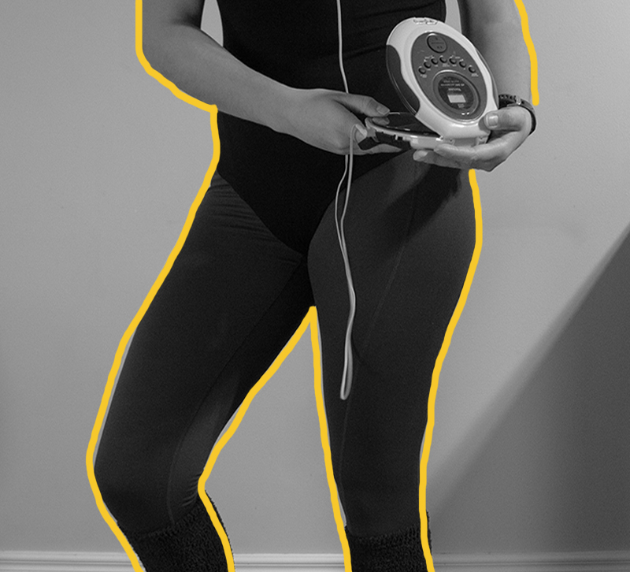
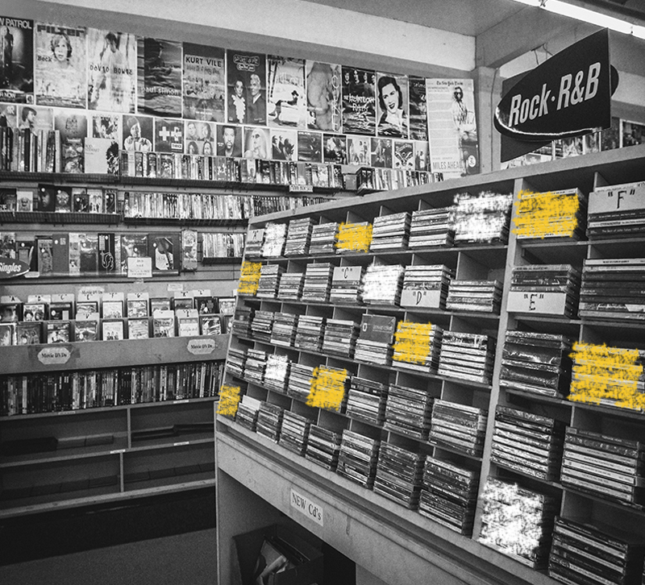
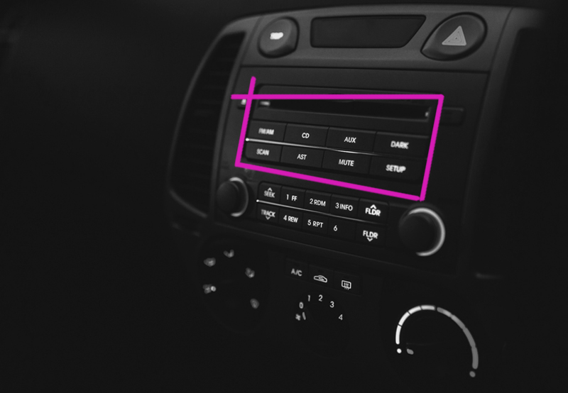

80s
What would the 80s look like if CDs first came out?

Everyone in the 80s would be carrying around a CD player if they wanted to listen to music on the go. A CD player can only hold one CD and the user would have to change the CD out if they wanted to change the album or artist.

Users with a CD player will have to shop for CDs in order to listen to music. Users cannot burn or download songs onto CDs due to the lack of technology.

If users want to listen to their CDs while driving, then they will have to use a CD player. The CD players that came out in the 80s were very basic with play, pause, rewind and fast forward options.